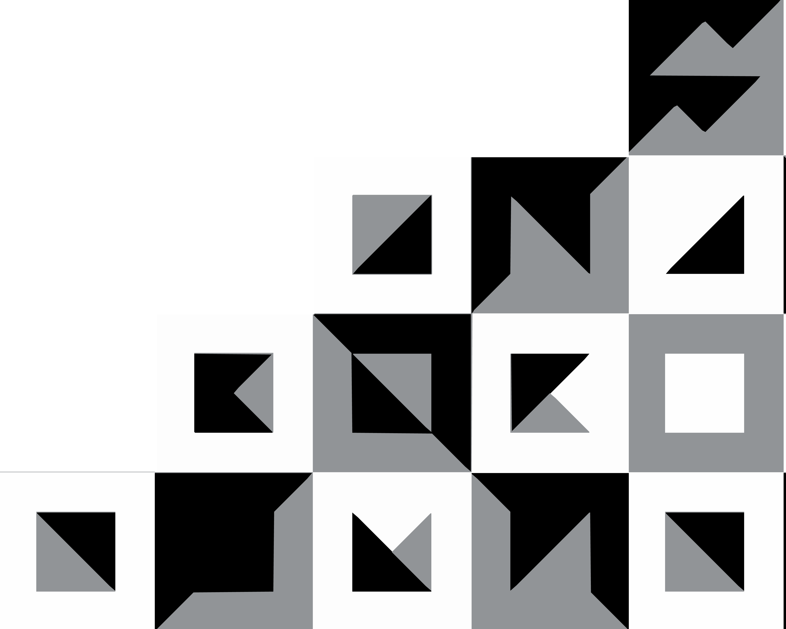

A signature
in the corner.
The corner pattern is fixed to the bottom-right of every format we produce. Letterhead, poster, book cover, certificate, print mat — same place, same proportion, every time. Over years, this becomes the thing people recognize before they read the name.
From the tile, to the corner.
The anchor is not a new mark — it is the master pattern tile, cascaded into the bottom-right corner. The tile bleeds off both edges; cells thin out as they move up and left, leaving the page open. See the pattern specification for the underlying tile.

One position. One proportion.
The pattern is mirrored from the source artwork so its mass falls into the bottom-right corner. The width is measured as a percentage of the format's shorter edge — never as a fixed millimetre value — so it scales gracefully from a business card to an A0 poster.
The pattern bleeds to both the right and bottom edges. No margin, no padding. It anchors the page; it does not float.
Measured from the shorter edge of the format so the proportion stays constant from card to poster. Adjust ±2% at the discretion of the designer; never beyond.
Ink-on-paper (default), paper-on-ink (reverse), or mid-grey on either ground. Never tinted, never gradient, never overprinted.
Nothing — text, image, or rule — is allowed in the bottom-right quadrant of the format. The anchor owns that corner alone.
Six formats, one anchor.
Below: every format MB produces, with the corner anchor applied at the same relative size. Notice how the eye finds the same corner on every surface — that's the recognition we're building.

Dear collaborator,
Please find enclosed the proposal for the editorial commission discussed last week. The scope covers four sequences across the Hajar mountains and the eastern coastline; final delivery is targeted for late autumn.
With thanks for your patience —
Moadh
An archive
of quiet places
Notes on weather,
ground, and light.
In cloud
What not to do.
The anchor's recognisability comes entirely from its consistency. These four mistakes break it.
Plain ground only.
One non-negotiable, repeated for clarity.
The anchor sits in the lower-right corner of plain backgrounds — paper, ink, bone, grey. Never on a photograph. Never centred. Never as a watermark on the work.
When a brand mark needs to appear on a photograph, use a small wordmark in white type instead — see the Photography chapter for spec.